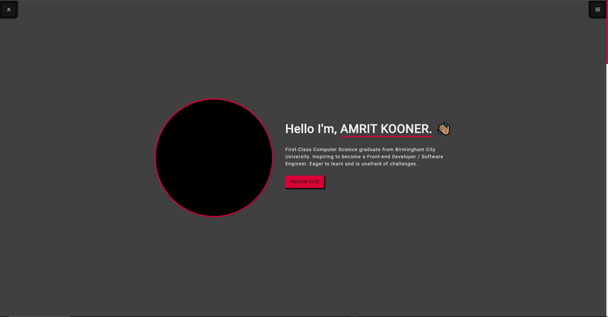
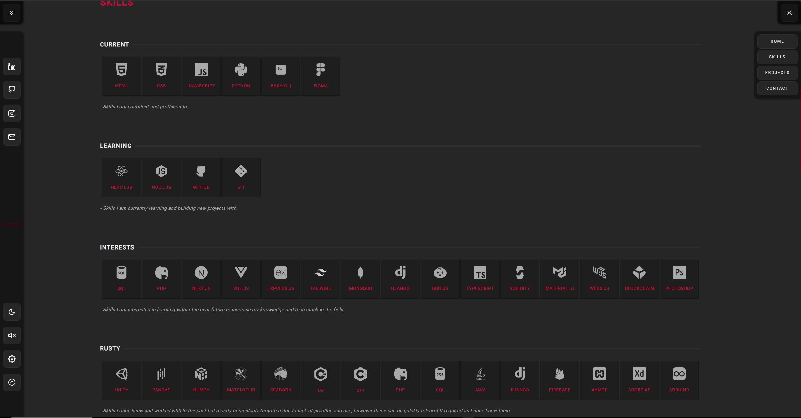
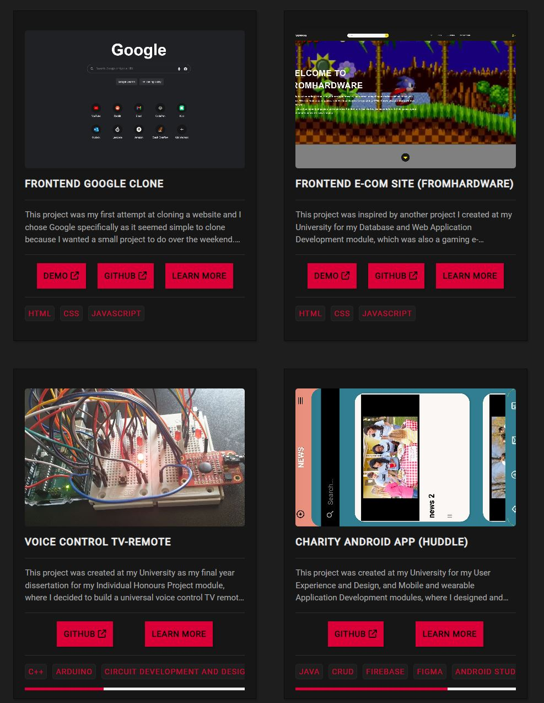
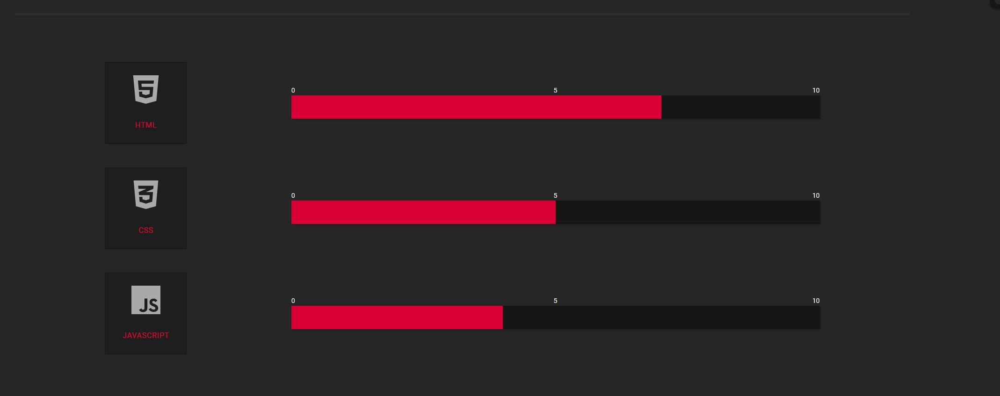
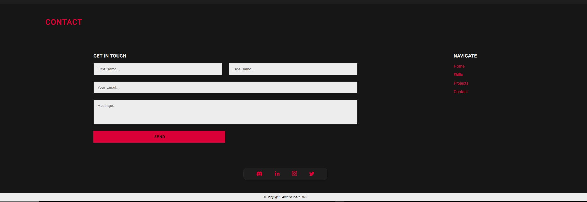
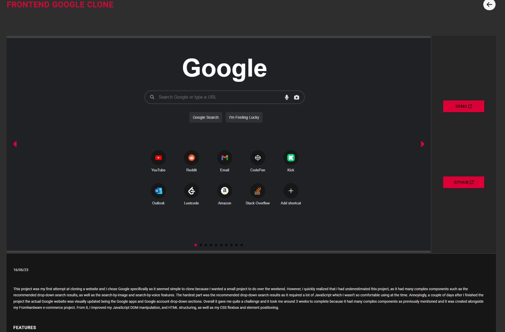
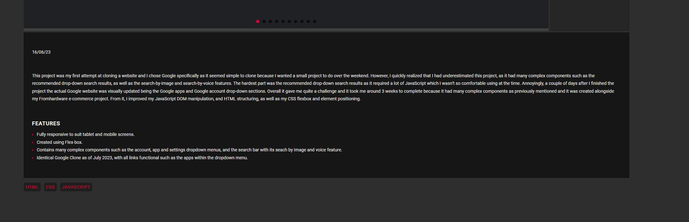

- 
- 
- 
- 
- 
- 
- 
This project is my personal proudest and most well-built in terms of UI design and code, as it's very clean using best practices in HTML, CSS, and JavaScript. A lot of time and care was put into this project as it's my most important one since it’s a portfolio, it will be my first project that potential employers see. And because of this, I wanted to make it more personalized and unique to make it stand out more. So I incorporated many features, such as a sidebar menu having utility buttons like a mute and settings button. It has a mute button as it was intended to have sound effects with interactable, and a settings page where the user can personalize and alter the color of the website. However, the logic for the mute and settings buttons hasn’t yet been implemented due to time constants. It was my first project have utilized transition animations which were used on the burger menu and sidebar, and my first that used CSS grid-box which was used on the projects and skills page. Overall, it was a very difficult and stress-worthy project as I don’t see myself as a good designer even though the design here is very aesthetic, it took me a while to think of these design choices. Also, since it had many complex components and logic, such as the sidebar and burger menu incorporated with JavaScript for toggling their status and loading/saving their state in the user’s local storage. This project took me around over a month to complete since it's my most polished and well-built yet and due to the difficulty as I previously mentioned. From it, I have learned more about using transition animations and gridbox in CSS, while also gaining experience in a more designer-focused mindset as I had to think very hard about design choices to use to ensure the project was aesthetically pleasant. I also further improved my HTML structuring, CSS flexbox, and element positioning.
features
- Fully responsive to suit tablet and mobile screens.
- Created using Flex-box and Grid-box.
- Functional slideshow on individual project page.
- Sidebar and burger menu.
- Functional contact form with reCAPTCHA anti-spam protection using the Formspree API.
- Attractive design.